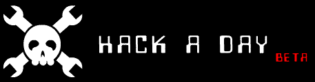
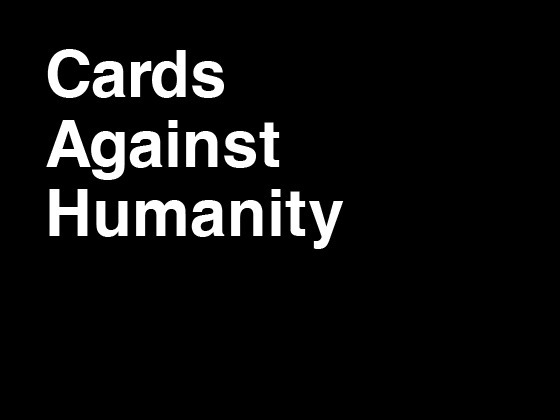

| Site Picks | ||
|---|---|---|
| Site | Synopsis | Link |
|  | Is a web site dedicated to informing and giving information on recent hacks or other technological actions related to it. | |
| Is a unix like open source computer operating system started by Linus Torvalds, he released the first version on September 17, 1991. | ||
| It spawned from the University of Berkeley in California starting in the 1970's it has had use in server's, workstations, to even home personal use. | ||
| Is a Linux distribution widely used targeted for personal computers, first was released on October 20, 2004. | ||
| Is a popular Linux distribution web site that provides news, popularity rankings, and other general information about various Linux distributions. | ||
| Minecraft is a game about placing blocks to build anything you can imagine. At night monsters come out, make sure to build a shelter before that happens. | ||
|  | A horrible game for horrible people. | |
| BackTrack is a distribution based on the Debian GNU/Linux distribution aimed at digital forensics and penetration testing use. | ||
| Google Labs was a page created by Google to demonstrate and test new projects. | ||